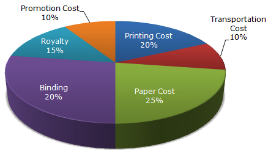
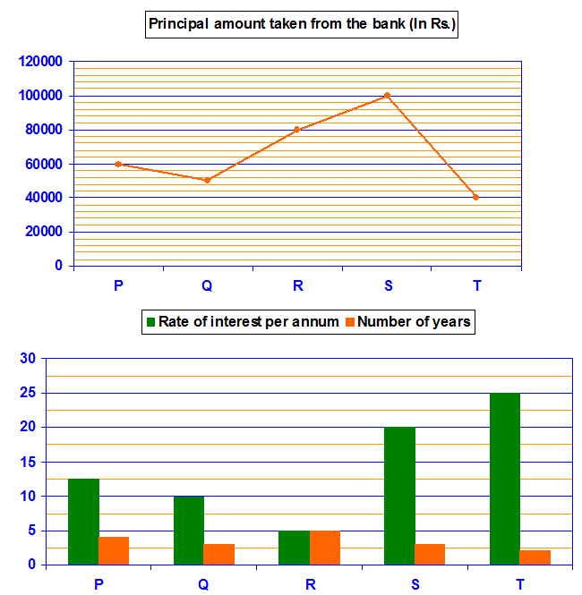
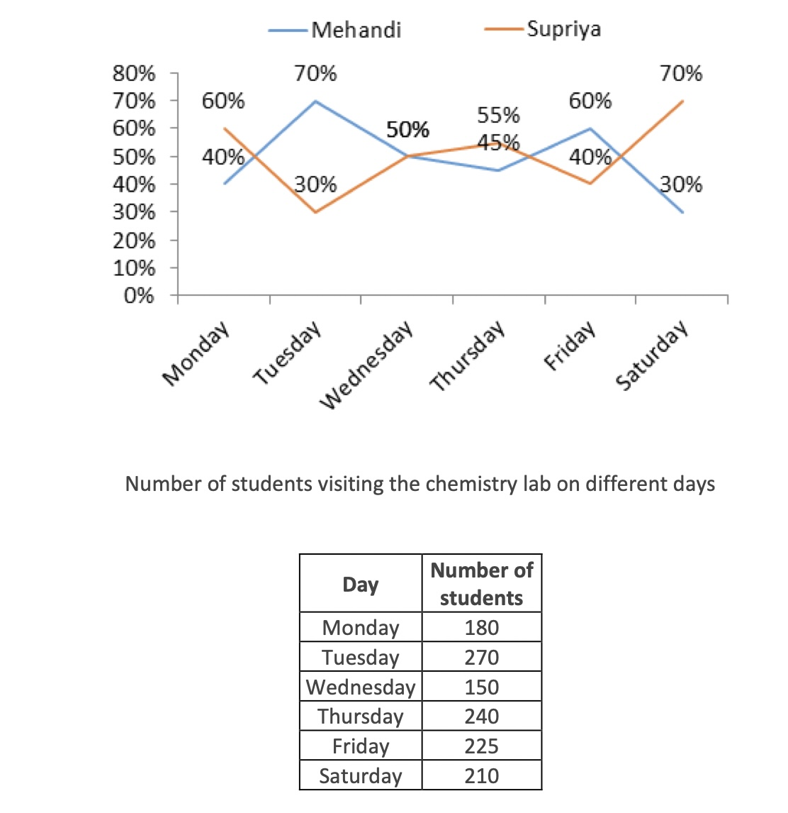
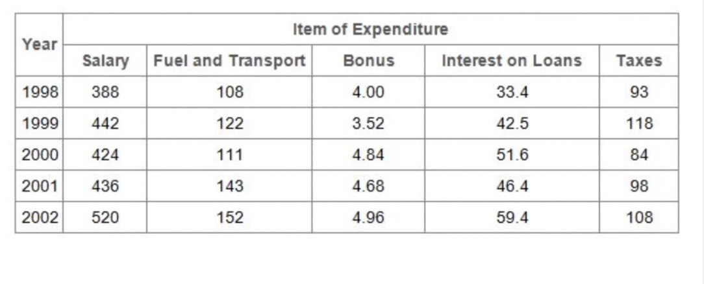
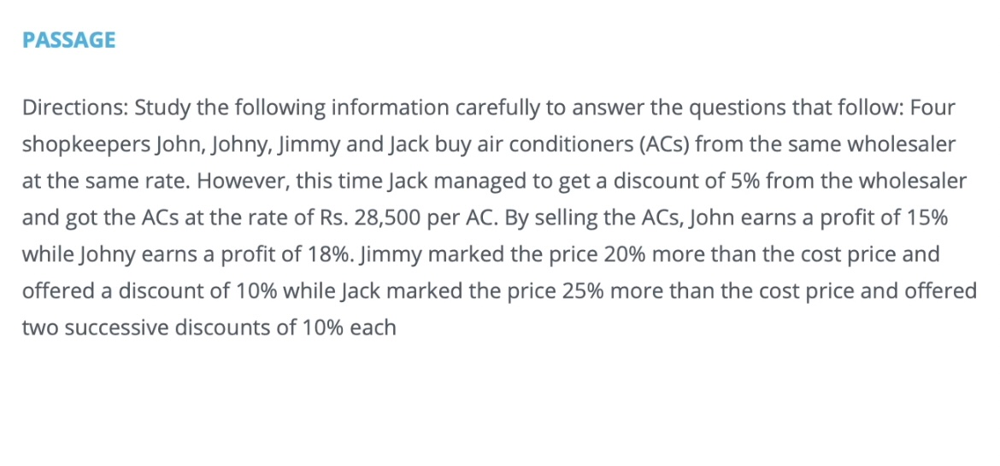
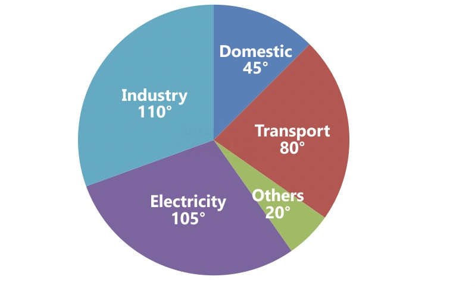
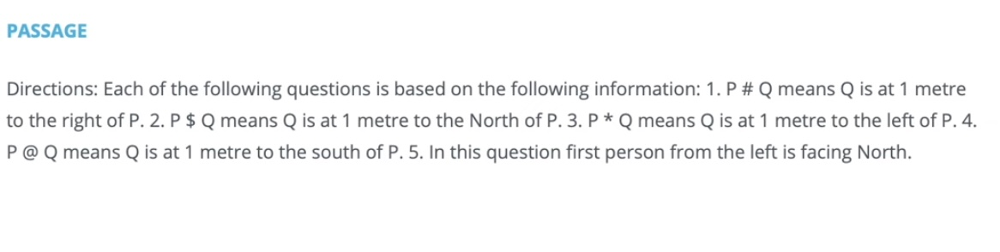
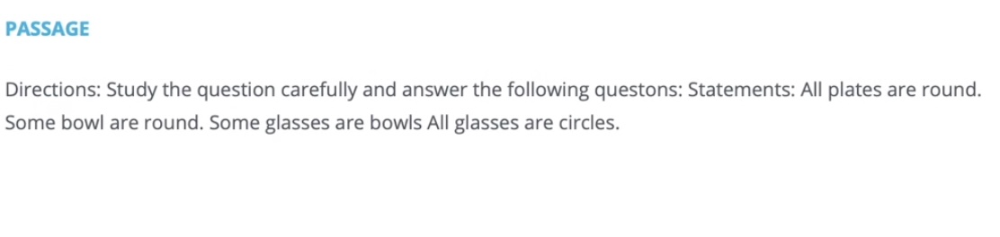
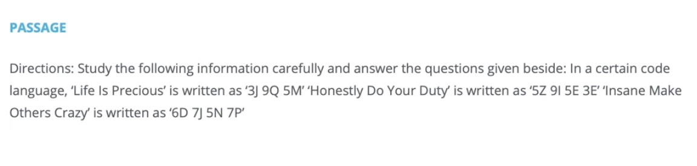

The following pie-chart shows the percentage distribution of the expenditure incurred in publishing a book. Study the pie-chart and the answer the questions based on it.
The line graph below shows the principal amount of loan taken by five persons from a bank. The Bar graph shows the interest rate and the number of years for which the loan is taken by these five persons. Study the data carefully and answer the questions.
Study the following line and table chart carefully and answer the questions given beside.
Study the following line and table chart carefully and answer the questions given beside.
Directions: Study the following information carefuly to answer the questions that foliow: Four shopkeepers John, Johny, Jimmy and Jack buy air conditioners (ACS) from the same wholesaler at the same rate. However, this time Jack managed to get a discount of 5% from the wholesaler and got the ACs at the rate of Rs. 28,500 per AC. By selling the ACs, John earns a profit of 15% while Johny earns a profit of 18%. Jimmy marked the price 20% more than the cost price and offered a discount of 10% while Jack marked the price 25% more than the cost price and offered two successive discounts of 10% each
Directions: Study the following graph carefully & answer the questions given below it. The basic fuel expenditure of a country is dominated by four major uses - Domestic, Transport, Industry and Electricity. In 1992, the total amount of energy used was equivalent to 600 million tonnes of coal.
Directions: Each of the following questions is based on the following information: 1. P#Q means Q is at 1 metre to the right of P. 2. P $ Q means Q is at 1 metre to the North of P. 3. p*Q means Q is at 1 metre to the left of P. 4. P@Q means Q is at 1 metre to the south of P. 5. In this question first person from the left is facing North.
Directions: Study the question carefully and answer the following questons: Statements: All plates are round. Some bowl are round. Some glasses are bowis All glasses are circles.
Directions: Study the following information carefully and answer the questions given beside: In a certain code language, 'Life Is Precious' is written as '3] 9Q SM 'Hanestly Do Your Duty is written as 5Z 91 SE 3E' Insane Make Others Crazy is written as '6D 7] 5N 7P
